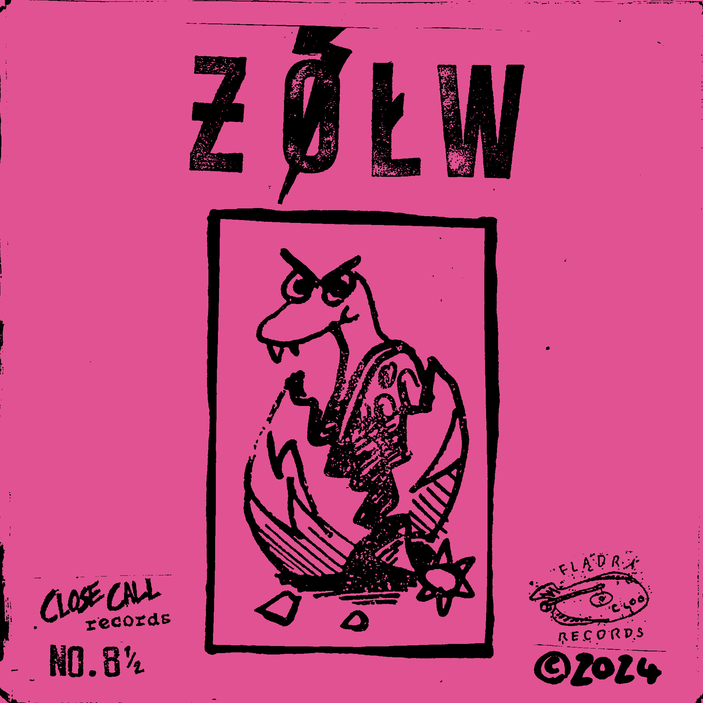
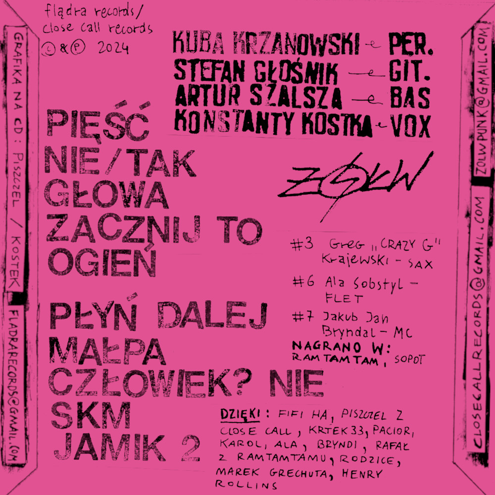

CD / 11 Utworów + Plakat
Album wydany początkowo na kasecie nakładem innego DIY labelu Kostka - wokalisty ƵÓŁWia - Flądra Records, po chwili doczekał się swojej reedycji na CD. Hardcore Punk znad Bałtyku z funkowo/jazzowym touchem!
Nagrano w Ramtamtam, Sopot - wiosna 2024
1. Pięść
2. Nie/Tak
3. Głowa
4. Zacznij to
5. Chodźmy tam!
6. Ogień
7. Płyń dalej
8. Małpa
9. Człowiek? Nie
10. SKM
11. Jamik 2
Konstanty Kostka - wokal
Stefan Głośnik - gitara
Artur Szalsza - bas
Kuba Krzanowski - gitara
Konstanty Kostka/Michał Czapski - grafika
3. - sax: Greg "Crazy G" Krajewski
6. - flet: Ala Sobstyl
7. - MC: Jakub Jan Bryndal
5. - słowa: Marek Grechuta
Michał Czapski - wydanie
Wydano - Kwiecień 2024
EPka aktualnie niedostępna.
Posłuchaj na Bandcamp.
Flądra Records / Close Call Records © 2024